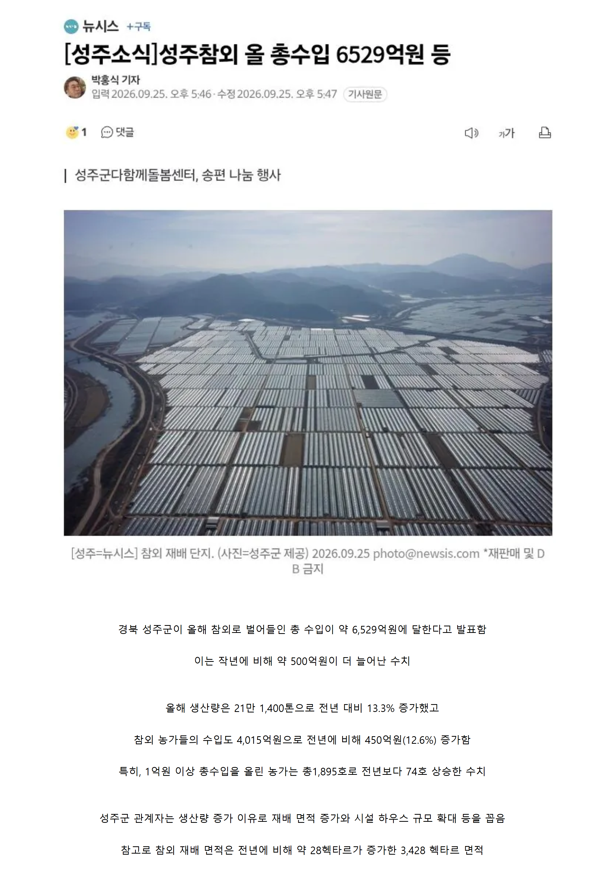

농업이 미래다 ㄷㄷ

농업이 미래다 ㄷㄷ
국내 참외가 사실상 다 경북에서 나오는데 거기서 성주가 7할임.
참외 너무 맛있음
참외 장사가 잘되능가??
막 참외 땅에 묻어버리는 그건 왜 한거지
이제 해외에도 슬슬 들어가기 시작
대구 사는 사람중에 부모님이 성주에 참외 농사한다 그러면 그냥 부잣집으로 인식함.
요새 일본에서 챠메라고 유행한대...
풍년으로 떡락해서 수확하는 비용이 수익보다 크니까 걍 갈갈
일본이 참외 수입해가긴하더라
참외 싸고 맛있음...
근데 참외 속이 맛의 액기스인데 파버리고 딱딱한 과육만 먹는 사파들도 있대...
우리엄마 이거 설득하는데 10년 걸렸다
수박도 다 버리고 흰부분만 먹고 살라고 말 좀 전해줘
아 ㅋㅋㅋㅋㅋㅋ
못배운티 난다고 그러던데 씨먹으면 ㄷㄷ
그건..메론이고..참외는 씨까지 먹는게 맞으니까... 못배운티=참외씨는버린다
나임. ㅋㅋ
배탈난다고 달달한 속은 버리는데 누가 팩트 알려줘
내가 참외배탈 전문간데 칼로 살살 긁어서 씨만 바르는거임 다 긁어내는게 아냐
가격은 예전보다 싸진거 같드만, 물량도 엄청 많고
보통 3배 비싸지던데 신기하네
초과수익 나눔하시죠?
수출이 미래다
사드 어쩌구 발작하던 동네 아닌가
저기동네에서한게 아니라 어떤 시위꾼들이 ㅋㅋ
ㅇㅇ 나도 시위하는데 궁금해서 나가봤다. 도대체 이 바쁜(참외따느라)시즌에 누가 시위를 하는가...아는 사람 아무도 없더라. 우리아버지 성주 토박이신데 아무도 아는사람 없었어...
코리아 멜론
아니 올해도 10킬로에 1.5만원에 사먹었는데
어떻게 1억원을 버는거냐
어디서삼? 난 샀다 망했는디
2ㅡ3월달에 아다리 잘맞으면 박스에 10마넌 넘게받는다. 아다리가 굉장히 잘맞으면 돈 많이번다. 농민 중 10퍼정도가 많이벌지
성주 참외가 특별한 맛이기는 하지
성주 참외 당도 최고
성주에는 농업기술원 소속의 참외과채류 연구소가 잇음
농민들 교육 및 신품종개발 기타등등 여러가지 큰일들에 힘쓰고 네이버 같은곳과도 협업함
메로나의 재료
언제지 8월초? 7월말? 즈음에 참외사먹었는데
역대급으로 맹맛이었다..
5월이 최고다.
7월부터는 당이 안올라가고 참외가 허옇다
참외가 그냥 심어만놔도 ㅈㄴ 잘자라더라
와 경북에 평지가 귀한데 ㄷㄷ 전부 비닐하우스
참외 맛있음
말되나?? 6억개 팔아야하는데?
멜론도 겁나 싸던데 한통막8처넌해서 마니먹음
올해 참외 맛있더라
엥? 전자파로 망한거 아니었나?
성주 저 동네 참외 비닐하우스 부근에 공동묘지도 2군데 있고 동남아 애들 수두룩빽빽한 ㅈ소도 몇 군데 있음.
한국 특산물로 알려진 거도 한 몫했나